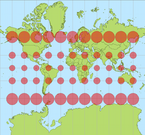

Su TANTO abbiamo scritto in varie occasioni di jQuery e abbiamo visto vari esempi delle sue potenzialità nella creazione di interfacce efficaci ed esteticamente valide per le applicazioni web.
Esistono tantissime estensioni per questo popolare framework ed una delle mie preferite è sicuramente jqGrid, utilissima per chi sviluppa applicazioni web in ambito geospaziale.
La sua utilità nel nostro campo è presto detta: un’applicazione GIS, che sia desktop o web, non consiste solo della mappa, ma deve dare anche la possibilità a chi la usa di esplorare le informazioni associate agli elementi visualizzati, cioè gli attributi. jqGrid assolve benissimo il compito.
Gli esempi sul sito ufficiale offrono una buona carrellata delle possibilità del plugin e, insieme al dettagliato wiki, permettono di produrre le prime griglie in tempi brevi.
I formati di dati che jqGrid è in grado di importare e rappresentare sono molti e, tra questi, quello che ci interessa in particolar modo oggi è JSONP (JavaScript Object Notation with Padding).
In breve, si tratta di una tecnica che supera le restrizioni della same origin policy e permette di effettuare chiamate tra domini differenti. E’ bene sapere, comunque, che questa è una regola di sicurezza che, impedendo di eseguire script provenienti da siti esterni e “non fidati”, protegge l’utente da attacchi informatici detti XSS (Cross Site Scripting).
Ricorrere a JSONP è una delle strategie disponibili per aggirare questa politica, che risulta parecchio limitante per le applicazioni web che, come i Mash-up spaziali spesso citati su TANTO, fanno uso di dati provenienti da più fonti.
Il trucco si basa sulla capacità del tag html script di caricare file javascript, anche esterni e, all’occorrenza, eseguire del codice. Non mi dilungo oltre sull’argomento e rimando a wikipedia e a questo articolo su HTML.it per eventuali approfondimenti.
Vediamo subito un esempio. Come fonte di dati prendiamo il risultato di un query task lanciato verso un MapService ReST di ArcGIS Server. Il codice per ottenere la griglia di attributi è molto semplice e il risultato di sicuro effetto.
Il codice è volutamente semplice e ovviamente si può sostituire il valore della clausola where, qui passata come parametro e valorizzata con 1=1, con qualcosa di più utile (o dinamico).
Qui sotto potete vedere l’output della query in una tabella dinamica che offre la possibilità di consultare in modo ricco ed interattivo la nostra sorgente di dati spaziali d’esempio
Questo articolo nasce dall’idea di aprire una finestra su quella branca della geomatica che si occupa della condivisione e diffusione in rete dell’informazione geografica, comunemente indicata col termine webmapping e spesso protagonista su questo blog.
Prima di entrare nel vivo del discorso, però, vorrei precisare che quello proposto è il mio personale punto di vista, costruito nel tempo in base alla mia esperienza professionale in questo campo. Esistono altri strumenti e approcci diversi rispetto a quello che vedremo nel corso dell’articolo, quindi, come sempre, ogni commento sarà ben accetto e spunto di ulteriore riflessione.
Sicuramente si parla di una delle specializzazioni dei Sistemi Informativi Geografici che negli ultimi anni si sono trasformate più velocemente, complice l’evoluzione del World Wide Web e delle tecnologie legate ad esso. Si tratta, inoltre, di una materia fortemente interdisciplinare in quanto, a prescindere dall’ambito nel quale l’applicazione di webmapping verrà impiegata (turismo, analisi ambientale, monitoraggi di vario genere, ecc.), a monte ci sono le competenze di almeno quattro figure professionali differenti che comprendono l’esperto di GIS, il Database administrator, lo sviluppatore e il sistemista.
Ho pensato di scrivere un articolo come questo perché spesso mi capita di avere a che fare con persone interessate ad avvicinarsi a questo mondo o semplicemente curiose di sapere “cosa c’è sotto” ma messe in seria difficoltà dalla quantità, eterogeneità e frammentazione delle informazioni disponibili in rete.
Tutto ciò, insieme all’esistenza di una moltitudine di soluzioni software, di tanti standard reali e de facto, di moltissime filosofie e approcci diversi, crea un labirinto intricato in cui è facile smarrirsi specialmente se si è agli inizi.
La cartografia su internet diventa popolare
Un grande contributo all’esplosione della cartografia su internet è arrivato da alcune applicazioni web basate su mappe, come Google Maps, Google Earth, Yahoo! Maps, Virtual Earth (ora noto come Bing Maps), comparse relativamente pochi anni fa e divenute di massa nel giro di pochissimo tempo.
Lungi dall’essere delle applicazioni GIS in senso stretto, hanno comunque il merito di saper mostrare la forza del punto di vista spaziale: ogni oggetto, se collocato nello spazio geografico, viene arricchito con nuove informazioni intrinseche nella sua localizzazione e nella relazione con gli altri oggetti che si trovano nelle sue vicinanze.
La potenza espressiva della cartografia su internet, per la prima volta sotto gli occhi di tutti e non dei soli addetti ai lavori, ha dato un importante input per il cambio di passo che ha condotto alle moderne applicazioni di webmapping.
Certamente questa direzione si è potuta intraprendere anche grazie all’aumento delle capacità di elaborazione dei browser e alla crescita degli strumenti e delle tecnologie per lo sviluppo delle applicazioni web, alcuni dei quali ideati e rilasciati dagli stessi soggetti titolari delle famose mappe online (si pensi, ad esempio, alle API di Google Maps).
Le vecchie cartografie web, oltre ad essere accessibili a pochi, richiedevano spesso tempi di caricamento lunghi o l’installazione di plug-in sulla macchina dell’utente. Le recenti applicazioni di webmapping, invece, beneficiano di uno spiccato livello di interattività e reattività, caratteristiche tipiche delle applicazioni Web 2.0 che sfruttano tecnologie come AJAX e si integrano alla perfezione nell’ecosistema del web moderno, composto da social network, feed RSS e servizi di varia natura.
Standard è bello… e pratico
Una ulteriore spinta alla diffusione di questa nuova generazione di applicazioni di webmapping è venuta dall’affermarsi di standard aperti, documentati e condivisi messi a punto dall’Open Geospatial Consortium (OGC).
Le maggiori case produttrici di software GIS, nonché le comunità open source con i loro innumerevoli progetti, hanno implementato nei loro prodotti il supporto ai principali standard OGC (WMS, WFS, WCS, ecc.) favorendo l’interoperabilità. Chi progetta e sviluppa applicazioni di webmapping oggi ha la possibilità di mescolare risorse disponibili in rete e risorse locali, di utilizzare tecnologie e piattaforme differenti in grado, però, di scambiare informazioni grazie al rispetto degli standard e di ottenere così degli efficacissimi mash-up tramite i quali diffondere l’informazione spaziale.
Lato server
A prescindere dai dati, preferibilmente mantenuti in un RDBMS spaziale (come PostGIS o Oracle Spatial), salvo situazioni particolari un’applicazione di webmapping ha generalmente bisogno di due componenti che operano sul server: il web server e il map server.
Il web server, come Apache, solo per citare il più diffuso e più famoso, è l’ambiente che renderà possibile la pubblicazione del lavoro e accoglierà le richieste provenienti dall’applicazione client (quella con cui l’utente interagisce) per passarle al map server. Quest’ultimo, per dirla in maniera molto sintetica, interpreta tali richieste e produce di conseguenza degli output (le mappe) che vengono spedite al client di nuovo attraverso il web server. Ovviamente questo è uno schema generale ed anche se formalmente corretto (ricalca il funzionamento di UMN-MapServer, che è uno dei map server più validi e versatili), occorre tenere presente che ogni software appartenente a questa categoria ha le proprie modalità specifiche di azione. Geoserver ed ArcGIS Server sono altri due ottimi esempi, il primo è gratuito ed open source, come lo è anche UMN-MapServer, mentre l’altro è un prodotto proprietario distribuito da ESRI.
Prima di chiudere la breve panoramica sugli strumenti lato server, è bene ricordare che nel caso delle applicazioni di webmapping più avanzate è necessario avere a disposizione anche un linguaggio di programmazione (Java, PHP, Python, ecc.) per organizzare la logica di business, cioè l’insieme degli algoritmi che gestiscono lo scambio di informazioni tra il client e la banca dati. UMN-Mapserver, ad esempio, è completo di API (Application Programming Interface) per i principali linguaggi di programmazione, mentre ArcGIS Server propone due ADF (Advanced Development Framework) per Java e .Net.
Lato client
Il client, come anticipato nel precedente paragrafo, è quella parte dell’applicazione con cui l’utente finale interagisce. Questo “strato” ha, perciò, un ruolo fondamentale nel decretare il successo o insuccesso dell’intera applicazione. Senza un client efficace che metta in risalto gli strumenti più importanti offerti all’utente e lo prenda quanto più possibile per mano nel compiere le operazioni che lo porteranno ad ottenere la risposta desiderata (un’estrazione di dati tramite interrogazione, l’analisi di una determinata variabile ambientale, ecc.), si rischia seriamente di vanificare gli sforzi profusi nella progettazione e implementazione del database e degli algoritmi lato server.
E’ ovvio che, pur progettando un client ideale, non è sempre possibile raggiungere la massima facilità di utilizzo, poiché tutto è influenzato dal numero delle funzionalità offerte, dalla loro complessità, dal tipo di utenti a cui ci si rivolge e da diversi altri fattori. Tuttavia un’interfaccia utente intuitiva è il risultato a cui si dovrebbe tendere quando si inizia a progettarla.
Come si realizza il client? Le soluzioni sono tantissime, dai template html di UMN-Mapserver, ai framework in PHP come p.Mapper (sempre per UMN-Mapserver) che mettono a disposizione un client con dei moduli dinamici lato server (PHP MapScript), a librerie Javascript come OpenLayers, di cui si è spesso parlato qui su TANTO.
Personalmente preferisco l’ultima soluzione in quanto costruire il proprio client da zero usando una libreria Javascript (OpenLayers non è l’unica), sebbene possa essere inizialmente più laborioso rispetto alla configurazione di un framework come p.Mapper, presenta degli indubbi vantaggi.
Sorvolando sulla valenza didattica del costruire una ad una le funzioni attivate dai vari tasti di una toolbar, ci si rende conto della bontà della scelta quando quello che offre un framework out of the box non basta più e si deve procedere ad un lavoro di personalizzazione/integrazione. Spesso modificare il comportamento di un software complesso, legato ad una specifica piattaforma (UMN-MapServer e PHP MapScript, nel caso di p.Mapper), che comprende numerosi script interconnessi tra loro richiede uno sforzo ben superiore a quello necessario per scrivere da zero una nuova funzione che faccia uso di una classe della libreria OpenLayers (oppure delle API di Google Maps o ArcGIS Server).
Un altro vantaggio – sempre nel caso in cui si scelga di lavorare con Javascript – è che si semplifica di molto l’integrazione nell’interfaccia di librerie per la costruzione di Rich Internet Application (RIA), come jQuery, Dojo, Mootools, YUI o ExtJS, ottime per la creazione di tutti quei piccoli espedienti che rendono il client efficace (nell’accezione usata in precedenza). C’è davvero l’imbarazzo della scelta.
Considerazioni conclusive
Come dicevo in apertura, ci si può discostare anche di molto da quasi tutti gli strumenti elencati e da questo approccio senza per questo sbagliare. Tuttavia nelle prime fasi è utile individuare e chiarire dei concetti specifici, imparare a padroneggiare gli strumenti per muoversi con disinvoltura e poi, in seguito, avventurarsi e testare soluzioni alternative e sempre più originali. In ogni caso alcuni punti, come la creazione di un client intuitivo o il rispetto degli standard, hanno una valenza generale e andrebbero sempre tenuti in debita considerazione a prescindere dalle scelte che si opereranno. Non mi resta che augurare buon divertimento a tutti.
E’ ormai da qualche mese che ESRI, con ArcGIS.com è ufficialmente con la testa tra le nuvole. Giovanni Allegri ha già dato notizia di GISCloud in un precedente articolo, in effetti il primo servizio applicativo di GIS “evoluto” e abbastanza maturo totalmente utilizzabile via web.
I tempi, la tecnologia e il mercato per parlare di GIS in the cloud – come aveva teorizzato Vector One due anni fa – sono dunque ormai maturi, e la scelta di ESRI di lanciare la sua applicazione webGIS quasi assieme alla prossima release di ArcGIS 10 è quindi “dovuta”. Tanto più che la stessa ESRI ha stretto una partnership con Amazon Web Servicesgrazie alla quale è possibile “affittare” ArcGIS Server sulla piattaforma di cloud computing di Amazon.
A mio avviso però, ArcGIS.com va in totale controtendenza con le strategie alla base di progetti come appunto GISCloud o anche CloudMade e GeoCommons e in genere quelli basati su svariate soluzioni tecnologiche, volte a garantire l’interoperabilità tra i dati seguendo le specifiche dell’Open Geospatial Consortium.
Un GIS “in the cloud” dovrebbe essere “aperto” per definizione, almeno per quanto riguarda la possibilità per l’utente di utilizzare dati e servizi di mappa via web provenienti da svariate fonti. Certo, può non esserlo per la parte applicativa, come proprio GISCloud, mentre invece CloudMade offre risorse di sviluppo, e ancora GeoCommons offre servizi business ad-hoc. Bene, ArcGIS.com non lo è nè dal punto di vista dei dati utilizzabili, nè tanto meno applicativo (avevamo dubbi?), anzi è “ESRIcentrico” in una maniera oserei dire “ottusa”. Gli unici contenuti che è possibile caricare nel proprio account non sono, tanto per dire, nemmeno shapefile (sic!) ma formati proprietari ESRI come ad esempio Map Package e Layer Package, mentre tra i servizi di mappa via web si possono importare solo quelli erogati mediante ArcGIS Server… e non certo con formati OGC (WMS, WFS, ecc)!
Qui sotto potete “ammirare” una mappa che ho realizzato utilizzando esclusivamente dati erogati dalla Provincia di Trapani e dalla Regione Siciliana, ovviamente mediante ArcGIS Server. In realtà i dati della Provincia sono esposti in maniera un pò confusa, e lo si può notare consultando i singoli servizi nella relativa pagina di ArcGIS Server. In sostanza sono stati messi troppi layer assieme, spesso ripetendoli da servizio a servizio. Quelli della Regione invece sono organizzati con un singolo layer per ogni singolo servizio, e dunque meglio utilizzabili in ArcGIS.com. In realtà mettere più layer insieme in un solo servizio non è affatto sbagliato, anzi, a patto che lo si faccia seguendo il criterio di realizzare una “vista” o mappa, ovvero rendendo gli strati visivamente compatibili (trasparenze, ordine di sovrapposizione, ecc).
La mappa, incorporabile in pagine web mediante <iframe>, risulta estremamente scarna, con la possibilità di impostare solo la dimensione e metterci o meno un tool di zoom. L’obiettivo è quello di indurre l’utente a visualizzarla direttamente su ArcGIS.com cliccando sul link “Visualizza una mappa più grande”. E magari fargli aprire un account…
Insomma, il cloud GIS secondo ESRI è chiuso, sia dal punto di vista applicativo (e questo ci può pure stare) sia dell’interoperabilità con i dati. E di questo francamente non ne vedo proprio la necessità, visto che la sua posizione dominante – almeno nei segmenti business e pubblico – è sempre molto salda, e non sarebbe di certo stata intaccata dando la possibilità di utilizzare dati vettoriali come shapefile (non dico PostGIS) e importare servizi di mappa via web con standard OGC.
Si tratta di un sistema di cloud computing dedicato a servizi webgis che, in linea col concetto di “software as a service” , permette di sfruttare risorse hardware a software distribuite per realizzare servizi GIS online.
Tra le numerose funzionalità, offre la possibilità di creare progetti online, di caricare, gestire, editare, esportare, ecc. dati raster e vector di tutti i principali formati noti. Oltre a diverse librerie proprietarie, GIS Cloud si appoggia anche a GDAL e OGR, a garanzia di un’alta interoperabilità.
I layer, una volta caricati e impostati, possono essere pubblicati sia tramite il loro flash viewer, che coe servizi WMS/WFS, nonché di fungere da client di servizi OGC, offrendo così la possibilità di realizzare anche mashup e servizi a cascata. Non poteva mancare il supporto ai servizi Openstreetmap, Google Maps, e simili.
Sono presenti inoltre alcuni semplici strumenti di analisi GIS e statistica, come esempio delle ulteriori funzioni che saranno rese disponibili in futuro…
Insomma, un oggetto da tenere d’occhio. In attesa di ricevere il vostro Free Account (che offre tutte le funzionalità ma in un ambiente non dedicato, con risorse condivise tra tutti gli utenti gratuiti e quindi non garantite) vi invito a fare un giro tra i video della loro sua gallery.
Tempo fa scrissi un articolo su ArcGIS Server 9.3 soffermandomi sui servizi REST e le API Javascript ed accennando al fatto che ESRI mette a disposizione delle estensioni per le API di Google Maps e per quelle di Bing Maps.
Ultimamente ho lavorato un po’ con le prime e ne ho avuto complessivamente una buona impressione. Tuttavia, durante lo sviluppo, ho riscontrato un problema nella misurazione delle distanze e delle aree che merita di essere messo in evidenza, soprattutto perché gli esempi della documentazione ESRI non lo fanno a dovere ed anzi, secondo me, risultano leggermente fuorvianti.
Terminata la premessa, prima di andare avanti con l’articolo, voglio ringraziare Domenico Ciavarella, che mi ha dato un supporto fondamentale per arrivare ad una soluzione che altrimenti starei ancora cercando.
La proiezione di Google Maps

Effetto di distorsione delle aree
Google Maps, Bing Maps ed altri provider (come OpenStreetMap, Yahoo e, di recente, la stessa ESRI) utilizzano una proiezione nota come Spherical Mercator, derivata dalla proiezione di Mercatore. Il codice EPSG ufficiale è 3785, anche se prima della sua definizione molti software hanno utilizzato l’ufficioso 900913. L’identificativo per i software ESRI, tra cui ovviamente ArcGIS Server, è invece 102113.
Questa proiezione considera la Terra come una sfera e consente di includerne completamente la superficie all’interno di un quadrato.
Quando però si rappresenta una superficie curva su di un piano, come un foglio di carta o il monitor di un computer, si introducono delle deformazioni. In questo caso, man mano che ci si allontana dall’equatore le aree cartografate subiscono un pesante stiramento sia in senso verticale che orizzontale e diventano, quindi, via via più esagerate verso i poli (la Groenlandia, per esempio, sembra più grande dell’Africa). Questa proiezione evidentemente non è fatta per minimizzare la deformazione delle aree (la proiezione di Mercatore è conforme infatti), ma risulta vantaggiosa per l’uso attraverso il web perché consente di applicare un modello efficiente di tassellamento e caching.
Il problema…
Ammettiamo di voler creare un’applicazione di webmapping con le sopracitate estensioni delle API Javascript di ArcGIS Server per Google Maps.
La prima cosa da fare è creare un mapservice in grado di esporre i nostri dati spaziali con la medesima proiezione delle basi cartografiche di Google. Come spiegato nel post dedicato ad ArcGIS Server (linkato all’inizio di questo articolo) un mapservice “aggancia” e pubblica un progetto redatto in ArcMap (il classico .mxd), quindi basta assegnare al dataframe del progetto il sistema di riferimento appropriato (che si trova nella lista dei sistemi proiettati, alla voce WGS 84 Web Mercator, con identificativo 102113), salvare il tutto e pubblicarlo con ArcGIS Server. Niente di difficile insomma.
Focalizziamoci ora sullo sviluppo del client: tra i tanti strumenti che oggi ci si aspetta di trovare in una applicazione WebGIS ci sono i “righelli” che consentono di disegnare spezzate e poligoni e di misurarne poi lunghezza ed area. ESRI lo sa, ed ha giustamente incluso un esempio per mostrare come creare questi tool nella documentazione delle sue API.
Abbiamo detto però che l’uso della proiezione Spherical Mercator provoca una deformazione crescente man mano che ci si spinge verso i poli e, tracciando una spezzata per misurare un oggetto al suolo di dimensioni note, come uno stadio di calcio, ci si accorge dell’inghippo: è più lungo di quanto dovrebbe essere (circa 146 metri invece di 105-110).
L’esempio fornito da ESRI non considera la deformazione e può indurre gli sviluppatori all’errore. E’ vero che una persona con le adeguate conoscenze di geomatica può arrivare ad intuire il rischio insito nell’uso della proiezione di Google, ma è anche vero che il webmapping è terra di confine tra “gissologi” e sviluppatori informatici “puri”, senza particolari cognizioni tipiche del mondo gis. Non è per nulla detto, quindi, che chi sviluppa abbia i mezzi per immaginare il problema prima di averci sbattuto il muso e personalmente credo che aver pubblicato un esempio del genere nella documentazione ufficiale, senza neanche accennare alla questione della deformazione, sia stata una leggerezza.
…e la soluzione
Non molto tempo fa sul blog di ArcGIS Server è comparso un interessante post che mette in evidenza il problema della misurazione delle distanze e spiega come comportarsi per risolverlo.
Il servizio che in ArcGIS Server è incaricato di calcolare lunghezze ed aree, il Geometry Service, è in grado di svolgere diverse altre operazioni, tra cui la proiezione al volo delle geometrie.
Il “trucco” consiste nel riproiettare la geometria tracciata dall’utente nel sistema di riferimento più adatto alla zona mappata prima di effettuarne la misurazione e stampare a schermo il risultato.
Purtroppo lo snippet di codice fornito da ESRI è pronto all’uso solo per le API Javascript, mentre per le estensioni di Google Maps bisogna fare da soli e il discorso è un po’ meno semplice.
Al posto di questa funzione:
var sr = new esri.SpatialReference({wkid:32610});
geometryService.project([graphic], sr, function(projectedGraphic) {
geometryService.areasAndLengths(projectedGraphic, function(result) {
var perimeter = result.lengths[0];
var area = result.areas[0];
});
});
abbiamo bisogno di questa:
var geometryService = new esri.arcgis.gmaps.Geometry("http://sampleserver1.arcgisonline.com/ArcGIS/rest/services/Geometry/GeometryServer");
function calculateLengths() {
//Parametri per la riproiezione
var params = new esri.arcgis.gmaps.ProjectParameters();
params.geometries = [polyline];
params.inSpatialReference = 4326;
params.outSpatialReference = 3004; //Gauss-Boaga fuso Est
//Riproiezione e funzione di callback
geometryService.project(params, getLengths);
}
function getLengths(projectResults){
var url = "http://sampleserver1.arcgisonline.com/ArcGIS/rest/services/Geometry/GeometryServer/lengths";
var parameters = {
polylines: projectResults.geometries,
sr: 3004
};
esri.arcgis.gmaps.JSONRequest(url, test, parameters);
}
function test(result) {
alert(result.lengths[0]+" m");
}
Ho realizzato un veloce esempio che mostra i risultati ottenuti dal codice proposto da ESRI nella propria documentazione a confronto con quelli ottenuti dalla riproiezione con il Geometry Service e dalle semplici API di Google Maps, che hanno dei metodi propri per la misura di linee e poligoni.
Lezioni online per spiegare scienza e tecnologia Oilproject organizza con l’Istituto Italiano di Tecnologia una serie di lezioni divulgative su neuroscienze, nanotecnologie, farmacologia e macchine intelligenti, per raccontare al grande pubblico lo stato dell’arte della ricerca di base e applicata. Qui tutti i dettagli. Leggi tutto... (0)
Il GFOSS Day 2011 è a Foggia I prossimi 24 e 25 novembre l’Università degli Studi di Foggia ospiterà il GFOSS DAY 2011, organizzato come di consueto dall’Associazione Italiana per l’Informazione Geografica Libera GFOSS.it Leggi tutto... (1)
Mappali, denunciali e... tassa.li Tassa.li è una interessante startup realizzata da un gruppo di giovani tecnologi, con l’intento di rendere facile la denuncia di esercizi commerciali che non rilasciano il regolare scontrino fiscale. E in un periodo nero come questo, molta gente avrà una gran voglia di partecipare. Grazie a una applicazione disponibile sia per iOS che Android, è infatti possibile in pochi clic geotaggare l’esercizio e riportare la somma dello scontrino non emesso. Il tutto in maniera assolutamente anonima. E questi ragazzi dimostrano di vedere molto lontano, perché presto rilasceranno i dati raccolti in forma totalmente aperta e libera. (7)
TANTO non rappresenta una testata giornalistica ai sensi della legge n. 62 del 7.03.2001, in quanto non viene aggiornato con una precisa e determinata periodicita'. Pertanto, in alcun modo puo' considerarsi un prodotto editoriale.